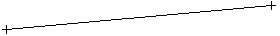
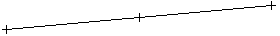
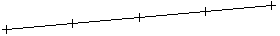
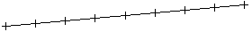
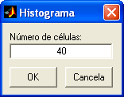
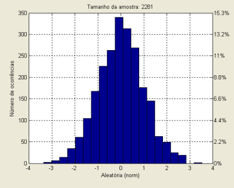
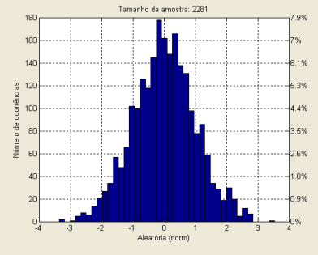

| Menu Opções |
|
O R_DAT permite
que alguns recursos sejam configurados pelo
usuário.
O menu “Opções” dá acesso às
seguintes configurações:
Precisão
da Posição do Cursor
Essa opção
permite alterar o número de casas decimais das
coordenadas do cursor, apresentadas no canto inferior direito da janela
do
R_DAT.
Clique no menu “Opções ►
Precisão da posição do cursor ...”, selecione a opção desejada e clique
“OK.
As opções
disponíveis são de
Alguns exemplos
são apresentados a seguir:
|
Tipo de
parâmetro |
0 casas decimais |
3 casas decimais |
6 casas decimais |
|
Número |
1852 |
1852.123 |
1852.123456 |
|
Tempo |
10:15:32 |
10:15:32.123 |
10:15:32.123456 |
|
Latitude |
S 21°50’ |
S 21°50.123’ |
S 21°50.123456’ |
|
Longitude |
W 048°32’ |
W 048°32.123’ |
W 048°32.123456’ |
A definição será lembrada pelo R_DAT nas sessões subsequentes.
Segmentos
da Régua
Essa opção
permite alterar o número de segmentos da régua do
gráfico principal.
Clique no menu “Opções ►
Segmentos da régua ...”, selecione a opção desejada e clique “OK.
As opções
disponíveis são de
A apresentação
da régua no gráfico principal é habilitada
pelo menu “Exibir
régua” ou pelo botão na
Barra de Ferramentas.
Alguns exemplos
são apresentados a seguir:
|
Número de
segmentos |
Aparência |
|
1 |
 |
|
2 |
 |
|
4 |
 |
|
8 |
 |
A definição será lembrada pelo R_DAT nas sessões subsequentes.
Células
do Histograma
Essa opção
permite alterar o número de células do
histograma.
Clique no menu “Opções ►
Células do histograma ...”, insira o valor desejado e clique “OK.
É possível
definir qualquer número inteiro de

A apresentação
do histograma é habilitada pelo menu
“Histograma
do intervalo” ou pelo botão na
Barra de Ferramentas.
Alguns exemplos são apresentados a seguir:
 
A definição
será lembrada pelo R_DAT nas sessões
subsequentes.
| |
Arrastar |
Opções
de
exibição da posição do cursor |
|